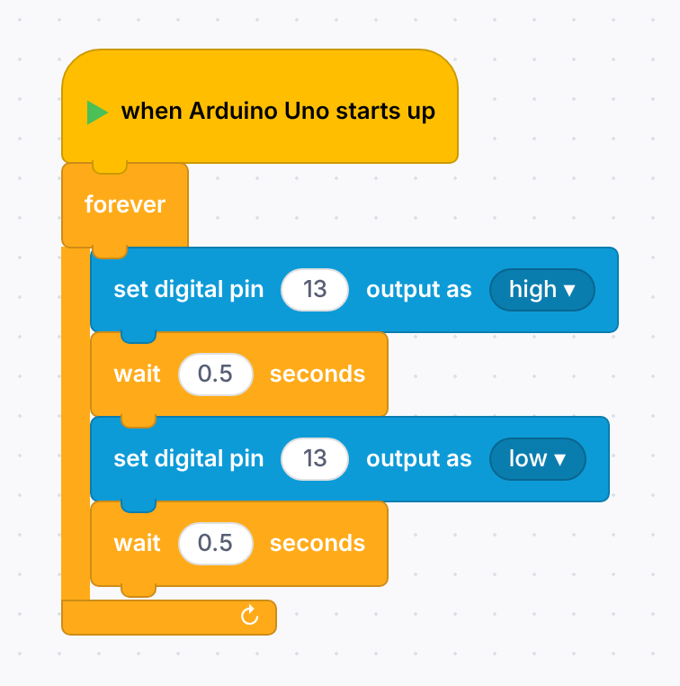

🎬فيديو الشرح
📖الشرح حسب العمر
🧒
قواعد ذهبية تحمي الأردوينو وتجعل مشاريعك تعمل من أول مرة.
استعمل millis() بدلاً من delay() في المشاريع الكبيرة. غذِّ المحركات من مصدر خارجي مع GND مشترك. استعمل Diode أو Driver لحماية الأردوينو مع المحركات والريليه. ضع مقاومة 220Ω أو 330Ω مع الـ LED. اكتب تعليقات (Comments) لتنظيم الكود. استعمل Interrupts للاستجابة السريعة.
استعمل millis() بدلاً من delay() في المشاريع الكبيرة. غذِّ المحركات من مصدر خارجي مع GND مشترك. استعمل Diode أو Driver لحماية الأردوينو مع المحركات والريليه. ضع مقاومة 220Ω أو 330Ω مع الـ LED. اكتب تعليقات (Comments) لتنظيم الكود. استعمل Interrupts للاستجابة السريعة.
- millis() ترجع الوقت منذ التشغيل بالملي ثانية
- attachInterrupt(digitalPinToInterrupt(2), f, FALLING)
- volatile للمتغيرات داخل المقاطعة
🖼️الصورة التوضيحية
- 1loop() بدون delayاستعمل millis()
- 2الأخطاءاقرأ رسالة الخطأ جيداً
💻البرمجة: Arduino IDE و mBlock 5
unsigned long t0 = 0; bool s = false; void setup() { pinMode(13, OUTPUT); } void loop() { if (millis() - t0 >= 500) { // كل 500ms بدون توقف t0 = millis(); s = !s; digitalWrite(13, s); } // هنا يمكن قراءة الحساسات في نفس الوقت }

في mBlock 5: الأجهزة ← أضف ← Arduino Uno، اختر وضع رفع (Upload)، ثم اتصال واختر منفذ COM، ركّب الكتل كما في الصورة واضغط رفع.
✅سؤال سريع
لماذا نفضّل millis() على delay()؟